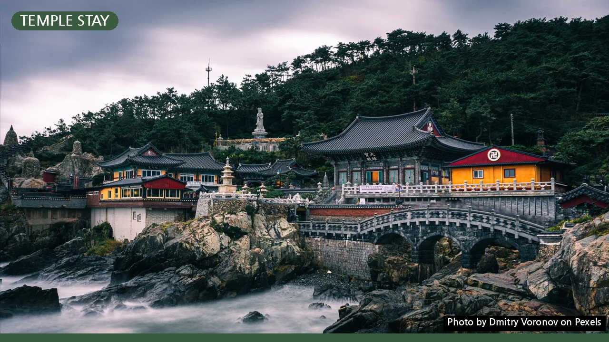
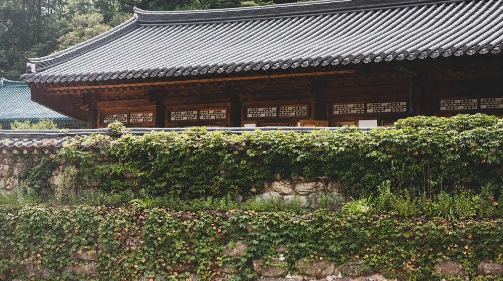

산사 워케이션, 놓치면 후회? 예약부터 준비물까지 완벽 가이드
사진: Dmitry Voronov / Pexels (무료 이미지, 출처 표기)
산사 워케이션 떠나기 전, 이것부터 확인하세요

고요한 산사에서 업무에 집중하고, 자연 속에서 온전한 휴식을 취하는 '산사 워케이션'에 대한 관심이 높아지고 있습니다. 복잡한 도심을 벗어나 새로운 영감을 얻고 싶은 분들이 많으실 텐데요. 하지만 일반 템플스테이와는 다른 산사 워케이션의 특성을 모른 채 떠났다가는 기대와 다른 경험을 할 수도 있습니다. 성공적인 산사 워케이션을 위해 예약 방법부터 필요한 준비물, 그리고 놓치지 말아야 할 팁까지 상세히 알려드립니다.
산사 워케이션, 무엇이 다를까?
'워케이션(Workation)'은 '일(Work)'과 '휴가(Vacation)'를 결합한 신조어로, 휴가지에서 업무와 휴식을 병행하는 새로운 근무 형태를 뜻합니다. 그중 '산사 워케이션'은 사찰이 제공하는 조용한 환경과 수행 문화를 접목한 프로그램입니다. 도시의 소음에서 벗어나 디지털 기기를 최소화하며 업무에 몰입하고, 명상이나 차담 등으로 심신을 다스리는 데 중점을 둡니다.
일반 템플스테이가 불교 문화를 체험하고 수행에 집중하는 반면, 산사 워케이션은 업무에 필요한 시설(전기, 인터넷 등)을 일부 지원하면서도 사찰의 고유한 문화를 존중하는 균형 잡힌 경험을 제공합니다. 이는 복잡한 생각에서 벗어나 업무 효율을 높이고 싶은 직장인이나 프리랜서에게 특히 매력적인 선택지가 될 수 있습니다.
성공적인 산사 워케이션을 위한 예약 방법
산사 워케이션은 일반적인 숙소 예약과는 다른 절차가 필요합니다. 아래 단계를 따라 신중하게 준비하시길 바랍니다.
- 1. 워케이션 특화 프로그램 탐색: 모든 사찰이 산사 워케이션 프로그램을 운영하는 것은 아닙니다. 템플스테이와 달리 업무 환경 지원 여부를 먼저 확인해야 합니다. 한국불교문화사업단(Templestay.com) 홈페이지에서 '워케이션' 또는 '업무 휴식' 관련 프로그램을 검색하면 정보를 얻을 수 있습니다.
- 2. 사찰별 환경 및 조건 확인: 각 사찰마다 제공하는 프로그램, 숙소 형태(독방 또는 다인실), 식사 방식, 업무 공간(공용 공간 또는 개인실 내 책상), 인터넷 환경, 참가 기간, 비용 등이 다릅니다. 본인의 업무 스타일에 맞는 곳을 신중하게 선택하는 것이 중요합니다.
- 3. 예약 경로 선택: 가장 일반적인 방법은 한국불교문화사업단 공식 홈페이지를 통한 예약입니다. 일부 사찰은 개별 홈페이지에서 직접 예약을 받기도 하며, 특정 지자체와 연계된 워케이션 플랫폼에서도 산사 워케이션 프로그램을 제공하기도 합니다.
- 4. 사전 안내 꼼꼼히 확인: 예약 확정 후에는 입소 전 안내문을 반드시 확인해야 합니다. 사찰의 규칙, 준비물, 프로그램 일정, 입소 및 퇴소 시간 등을 숙지하여 불이익을 당하는 일이 없도록 합니다.
2024년 6월 현재, 여러 사찰이 워케이션 프로그램을 제공하고 있으나 변동될 수 있습니다. 정확한 프로그램 내용과 예약 가능 여부는 각 사찰 홈페이지나 한국불교문화사업단을 통해 다시 확인하시길 권장합니다.
꼭 챙겨야 할 산사 워케이션 준비물 체크리스트
산사 워케이션은 일반적인 여행이나 템플스테이와는 다른 준비물이 필요합니다. 불필요한 짐은 줄이고, 꼭 필요한 물품 위주로 챙겨가세요.
놓치지 말아야 할 산사 워케이션 활용 팁
산사 워케이션의 특별한 경험을 극대화하기 위한 몇 가지 팁을 알려드립니다.
- 1. 디지털 디톡스 실천: 업무 시간 외에는 스마트폰, 태블릿 등 디지털 기기 사용을 최소화해 보세요. 평소 놓쳤던 주변의 아름다움과 내면의 소리에 집중하는 시간이 될 수 있습니다.
- 2. 사찰 예절 준수: 사찰은 수행 공간입니다. 스님과 다른 참가자들을 존중하고, 정숙한 분위기를 유지하며 기본적인 사찰 예절을 지켜야 합니다. 공양(식사) 시간이나 정해진 프로그램에는 적극적으로 참여하는 것이 좋습니다.
- 3. 자연과의 교감: 사찰 주변의 산책로를 걷거나, 숲속에서 명상을 하며 자연과 교감하는 시간을 가져보세요. 맑은 공기와 고요함이 스트레스 해소와 창의력 증진에 큰 도움이 될 것입니다.
- 4. 업무와 휴식의 균형: 업무에 집중하는 시간과 온전히 휴식하는 시간을 명확히 구분하는 것이 중요합니다. 업무에 몰입한 후에는 사찰에서 제공하는 프로그램(명상, 차담 등)에 참여하거나 휴식을 취하며 재충전의 시간을 가지세요.
- 5. 사찰 음식 체험: 자극적이지 않고 건강한 사찰 음식은 워케이션 경험의 중요한 부분입니다. 발우공양(공양 그릇에 담긴 음식을 남김없이 먹는 수행) 등을 통해 소박하고 감사하는 마음을 배울 수 있습니다.
자주 묻는 질문
Q: 산사 워케이션, 혼자 가도 괜찮을까요?
A: 네, 오히려 혼자 가는 것을 권장합니다. 혼자만의 시간을 통해 업무에 더욱 집중하고, 방해받지 않는 온전한 휴식을 취할 수 있습니다. 많은 참가자가 혼자 방문합니다.
Q: 사찰 내 인터넷(Wi-Fi) 환경은 어떤가요?
A: 사찰마다 편차가 큽니다. 일부 사찰은 업무를 위한 Wi-Fi를 제공하지만, 속도가 느리거나 특정 구역에서만 가능할 수 있습니다. 중요한 업무를 처리해야 한다면 개인 휴대폰 핫스팟이나 LTE 라우터 등을 준비하는 것이 안전합니다.
Q: 샤워 시설이나 개인 세면 공간이 제공되나요?
A: 대부분의 산사 워케이션 프로그램에서는 샤워 시설을 제공합니다. 다만, 개인 욕실이 아닌 공동 샤워실 형태일 수 있으니 예약 전 확인하는 것이 좋습니다. 개인 세면도구는 반드시 챙겨가야 합니다.
Q: 템플스테이와 산사 워케이션의 가장 큰 차이점은 무엇인가요?
A: 템플스테이는 사찰 문화를 체험하고 불교 수행에 참여하는 것에 중점을 둡니다. 반면, 산사 워케이션은 고요한 사찰 환경에서 업무를 병행하며 휴식을 취하는 데 더 큰 비중을 둡니다. 따라서 산사 워케이션은 업무에 필요한 환경(책상, 전기 등)이 좀 더 갖춰져 있습니다.
🔗 이 글도 함께 보면 좋아요: 내 몸이 원하는 한방 스파: 태양인부터 소음인까지 완벽 가이드